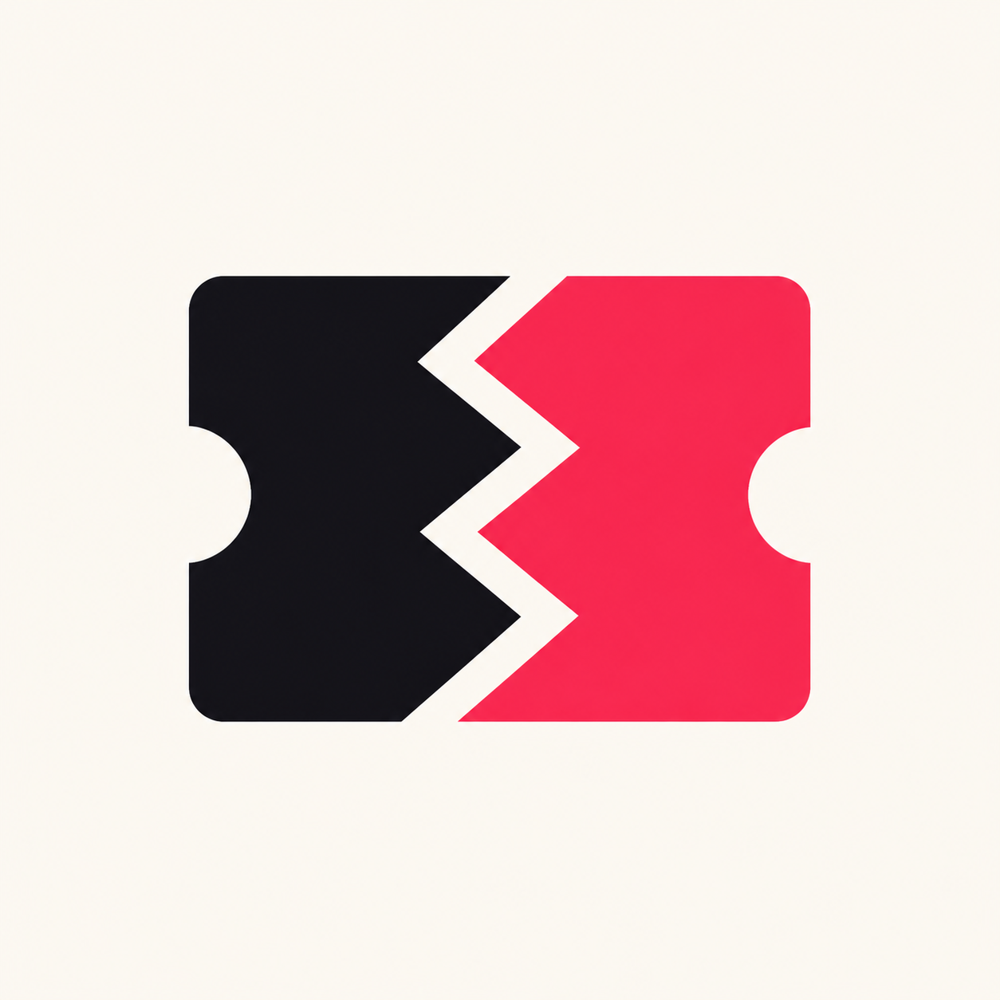
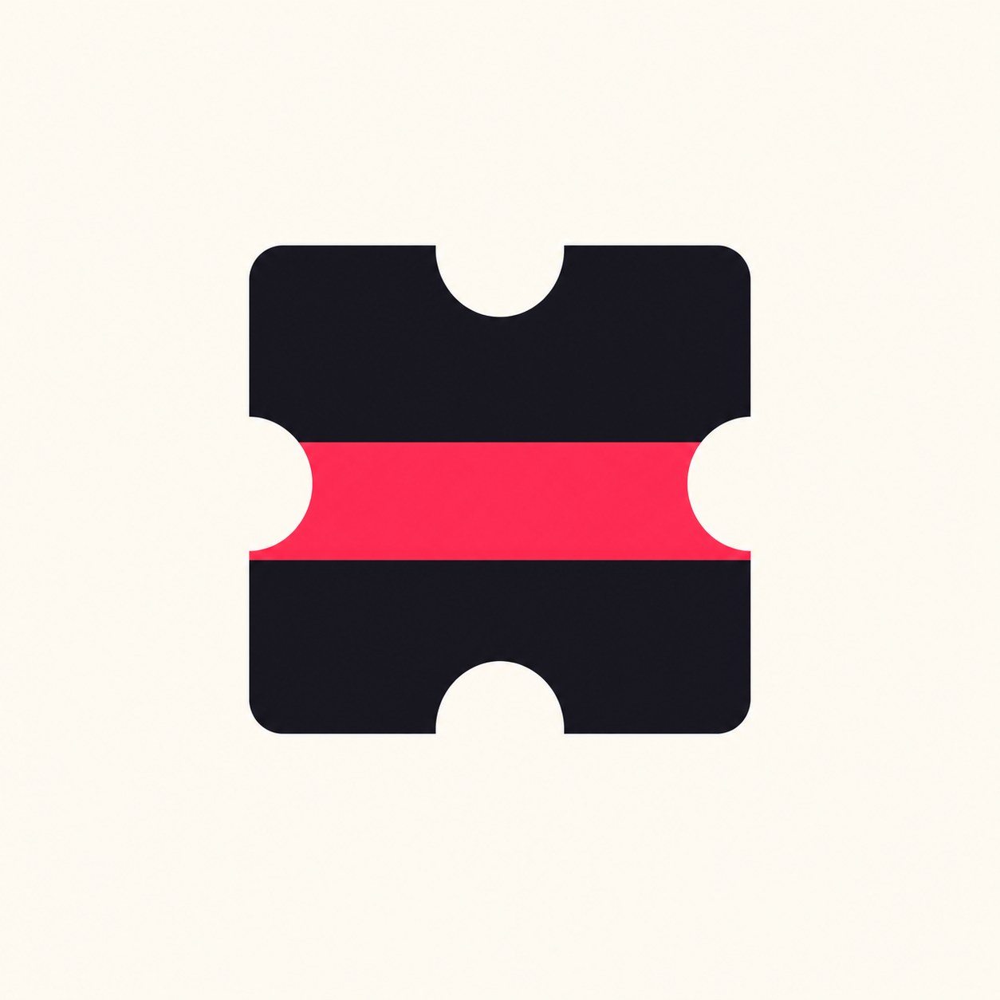
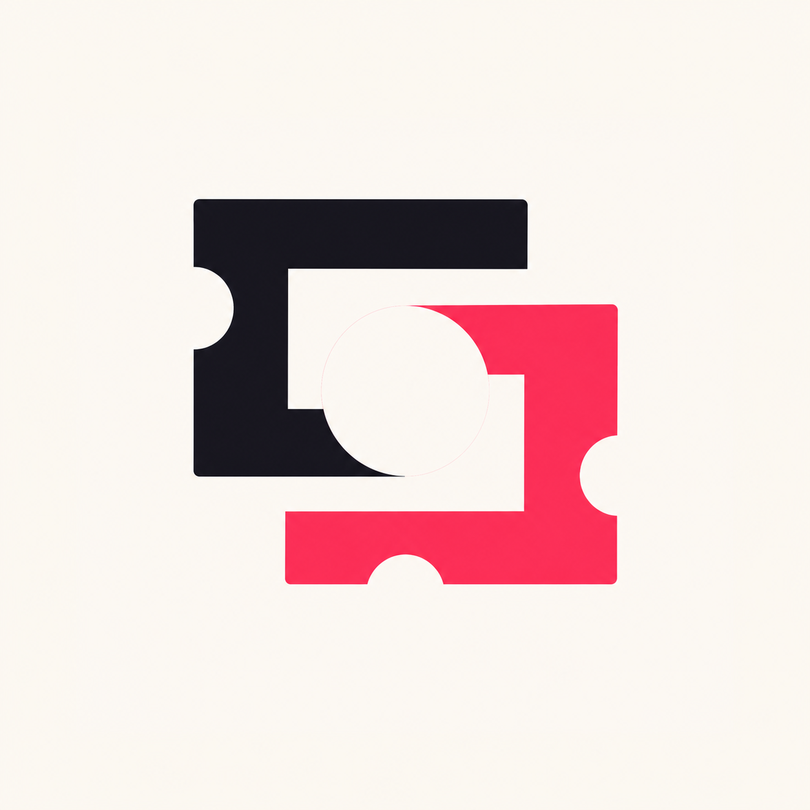
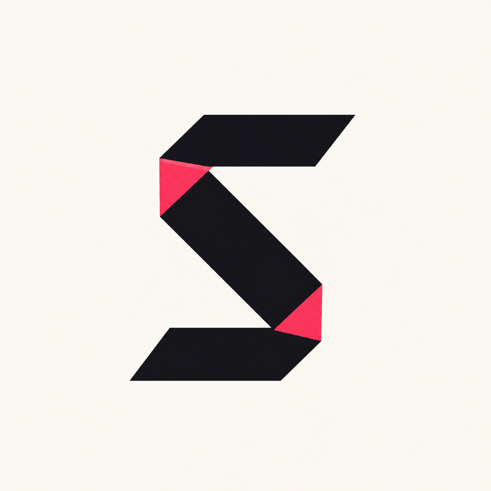
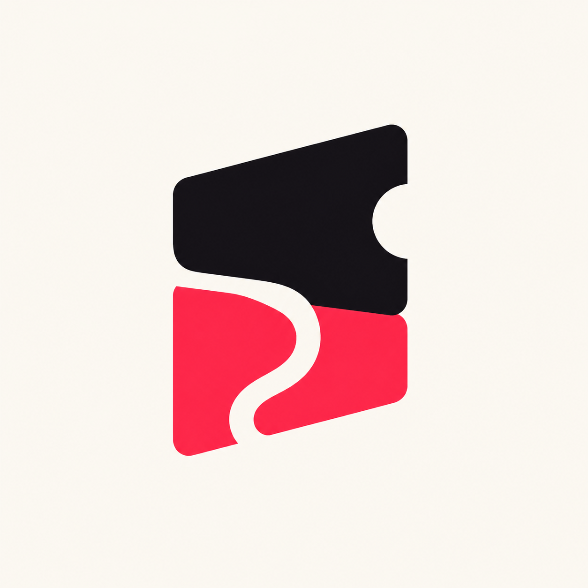

39 FINAL 01Matched Tear
One compact ticket mass divides into two mirrored halves along a single broad zigzag cream cut. One half black, one half rose; exactly three large teeth.
SINGSONG / FINAL SHORTLIST / 2026
Matched Tear, Bridge Pass, Folded Receipt, Double Gate, Seal Cut S, Corner Fold S, Twin Stub Negative S, Folded Session S를 최종 후보로 분리했다.
요청 순서 유지

39 FINAL 01One compact ticket mass divides into two mirrored halves along a single broad zigzag cream cut. One half black, one half rose; exactly three large teeth.

33 FINAL 02Two offset ticket slabs are connected by one thick horizontal bridge. The bridge is rose, the slabs black, and one shared notch makes the whole mark a single system.
One long black receipt strip folds into three broad layers that make a compact square bundle. One visible fold face is rose; no text and no small perforation dots. Strictly front-facing 2D orthographic geometry: no perspective, thickness, extrusion, isometric view, or stacked 3D slabs.

13 FINAL 04Two thick open ticket frames interlock at right angles without forming a chain. Their overlap contains one large circular cream punch; one frame black, one rose.
A solid rose rounded-square seal contains one broad cream S cutout. Remove one circular bite from the seal edge and add no other details.

08 FINAL 06A single angular strip changes direction at two diagonal folded corners to make a compact S. Show exactly two small rose fold faces on an otherwise black mark.

04 FINAL 07Two offset solid ticket-like slabs, one black and one rose, leave one continuous cream S-shaped gap between them. Use only one large semicircle notch across the pair.
One broad paper strip forms a compact capital-S movement through two precise mechanical folds. One small circular registration punch sits near an outer terminal; black middle span with rose upper and lower folds.